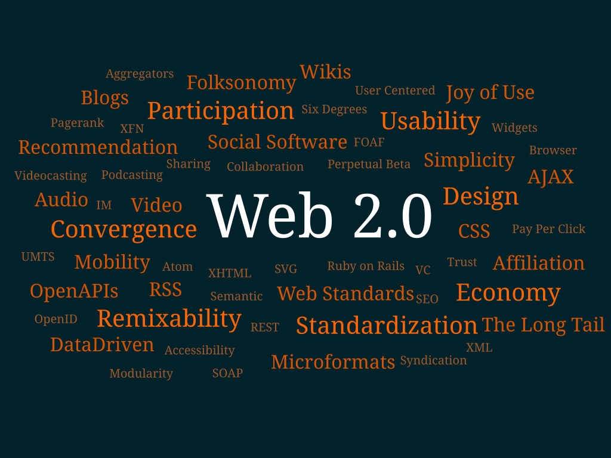

A partir dos anos 2000, apareceu a Web 2.0, chamada de “web de leitura e escrita” (read-write web), conceito popularizado por Tim O’Reilly, que coloca os usuários como criadores ativos de conteúdo e introduz colaboração em larga escala. Caracterizada principalmente por blogs, wikis, redes sociais e aplicações ricas (AJAX e APIs), essa fase transformou a internet em uma plataforma social e interativa. Ferramentas como Youtube, Facebook, Google Docs e WordPress exemplificam esse modelo colaborativo que democratizou a criação de conteúdo e facilitou o compartilhamento de ideias e conhecimento globalmente. A emergência do mobile e da computação em nuvem potencializou essa interatividade, permitindo acesso e participação em tempo real de qualquer dispositivo. Ao mesmo tempo, surgiu um novo modelo de negócio: a monetização por dados e publicidade personalizada, impulsionando empresas centralizadas (GAFAM) que controlam grandes volumes de informação dos usuários. De um lado a Web 2.0 expandiu a democracia digital, por outro lado levantou questões quanto à privacidade, algoritmos de filtragem e concentração de poder tecnológico.
